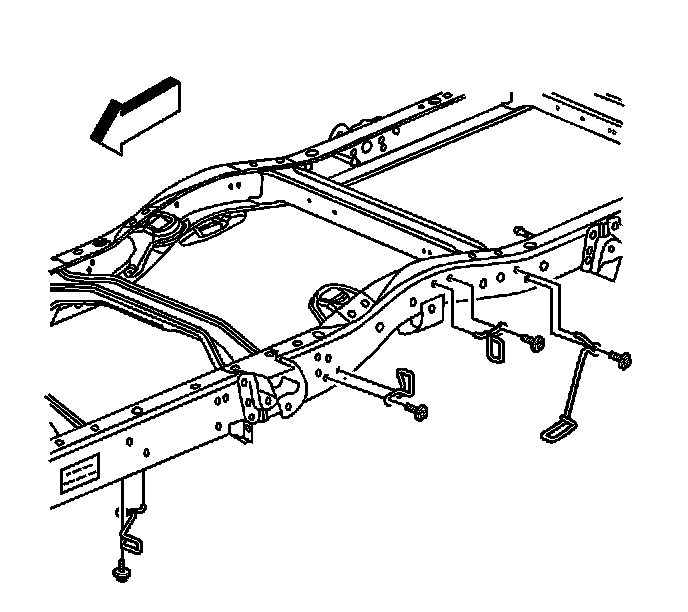

Park Brake Cable Guide Replacement
Park Brake Cable Guide Replacement
Removal Procedure
1. Release the parking brake.
2. Raise and support the vehicle. Refer to Lifting and Jacking the Vehicle.

3. Remove the park brake cable guide bolt from the frame.
4. Remove the park brake cable guide.
5. Remove the park brake guide from the park brake cable.
Installation Procedure
1. Install the park brake cable guide to the park brake cable.
2. Install the park brake cable guide.
Notice: Refer to Fastener Notice.
3. Install the park brake cable guide bolt to the frame.
Tighten the bolt to 12 N.m (13 lb ft).
4. Remove the safety stands.
5. Lower the vehicle.